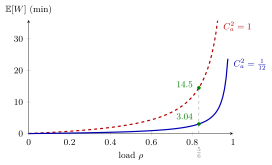

Sakasegawa's Formula¶
Proposition¶
Consider a queue (Kendall's notation): one queue in front of identical servers, i.i.d. inter-arrival times with mean , and i.i.d. service times , independent of the arrivals. Let
be the load of the station and the squared coefficients of variation of the inter-arrival and service times. Sakasegawa's formula approximates the expected waiting time in queue by
No exact expression is known for the queue. For and Poisson arrivals (so ) the formula is exact: it is the Pollaczek-Khinchine formula of the queue. Other renewal arrivals with do not make it exact.
Interpretation¶
The formula is a product of three factors: variability , a load factor that explodes as , and a time scale . It turns , , and the two SCVs into a waiting-time estimate and shows which lever matters most.

The figure plots the formula for Example 1, one microscope with minutes and , as the arrival rate and hence varies while the SCVs are kept fixed. At the uniform inter-arrival times () give minutes and Poisson arrivals () give minutes. Both curves rise steeply as , like .
The notes draw four lessons. First, near waiting is long and very sensitive to , so reduce the load first. Second, leaves only three ways to do so: fewer arrivals, shorter services, more servers. Third, is proportional to , so once is under control, reduce variability. Fourth, scales with : seen from the queue, servers finish jobs times as fast as one.
The route to the formula is to start from the exact result, replace by (still exact, ), then by (no longer exact, but good in practice). The power of handles servers and equals for . The condition is essential: as the estimate grows without bound, and for the formula is meaningless (see rate stability). With , is the utilization of each server only when the servers are equally fast and share the work equally.
Key Results¶
- Single server. For the exponent , so ; for Poisson arrivals (, ) this is exact (TF 6.1.1), and for the queue () it is .
- Deterministic system. A stable queue has , hence , which is exact (TF 6.1.3).
- Load sensitivity. With and the SCVs fixed, is proportional to when , so near a small reduction of the load removes a large part of the waiting (TF 6.1.2).
- Variability. Mixing job types with different mean service times raises : (Exercise 6.1.7).
- Estimating the SCVs. When only counts per period are logged, can be estimated by SCV estimation from counts.
- Sojourn time. The expected sojourn time follows as .
Examples¶
1. Inspection by microscope (Exercise 6.1.6). Tools arrive with inter-arrival times minutes; inspection has minutes and . Then , , so , , and . With ,
If the tools arrived as a Poisson process at the same rate, and minutes, now exact. The regular arrivals, always to minutes apart, cut the expected wait by almost a factor five.
2. Five percentage points less load (TF 6.1.2). In a queue with fixed and SCVs, lowering the arrival rate so that drops from to changes from to . The expected waiting time falls to of its old value: a small change in load roughly halves the wait.
3. Two slow servers or one fast one. Let per minute with Poisson arrivals and exponential services (). Two servers with minutes have and
close to the exact value . One server twice as fast, , has the same and minutes. The two-server station queues less, but its jobs then need minutes of service, so the expected sojourn time is about minutes against for the fast server.
4. Regular arrivals (Exercises 6.1.4 and 6.1.5). A customer arrives exactly once a minute and needs seconds: , and nobody waits; the server is busy of the time. If the service takes or seconds with probability each, the mean is still , , and . The formula then estimates seconds: service variability alone creates the queue.
Prerequisites¶
Related Concepts¶
- SCV Estimation from Counts
- Server Setup
- M/M/1 Queue
- Kendall's Notation
- Server Utilization
- Tandem Queue
- Departure SCV Approximation
Sources¶
- Stochastic Operations Research · Week 6
- N. D. van Foreest, Sample Path Analysis and Simulation of Stochastic Systems, Section 6.1
Aliases: Sakasegawa formula, Sakasegawa's approximation, G/G/c waiting-time approximation, G/G/1 waiting-time approximation Keywords: \mathbb{E}[W], C_a^2, C_s^2, \rho=\lambda\mathbb{E}[S]/c, \rho^{\sqrt{2(c+1)}-1}/(1-\rho), (C_a^2+C_s^2)/2, G/G/c queue, waiting time in queue, variability, utilization, time Symbols: element of, lambda, rho, square root
Last updated: 29 October 2026 20:42
Sakasegawa's FormulaDeparture SCV ApproximationPreemptive-Outage Effective Service TimeServer AdjustmentServer SetupTandem QueueServer LoadSquared Coefficient of VariationWaiting TimeM/M/c QueuePollaczek-Khinchine FormulaSCV Estimation from CountsM/M/1 QueueKendall's NotationServer Utilization